[redacted-person]
Änderungsdokumentation
| Änderungs-stand | Beschreibung der Änderung | Ersteller |
| [redacted-person] | Erstausgabe | [redacted-person] |
| [redacted-person] | Update 2015 | [redacted-person] |
| [redacted-person] | [redacted-person]:
|
[redacted-person] |
| [redacted-person] | Anpassung quasistatische Lastfälle:
|
[redacted-person] |
| [redacted-person] | [redacted-person] Türdichtung zu Karosse | [redacted-person] |
INHALTSVERZEICHNIS
Im Modellierungs- und Crashlastenheft (2_1_LAH_Crash_Modellaufbau_allgemein_plus_BM1-3) wird der Aufbau des allgemein gültigen Crashmodell beschrieben. In diesem Abschnitt werden die zusätzlichen seitencrashspezifischen Umfänge für die Auslegung im Seitencrash dargestellt.
Für die Entwicklung ist ein gemeinsames Seitencrash und Seitenschutzbasismodell zu pflegen. Spätestens zu den Meilensteinstatusberichten müssen die Modelle abgeglichen sein. Hierbei gibt es eine klare Verantwortungsaufteilung für den Aufbau der unterschiedlichen Komponenten. Der spezifische Verantwortungsbereich für die [redacted-person] wird in dem Lastenheft spezifiziert.
Ein gemeinsames Seitencrash und [redacted-person] muss gepflegt werden. Im allgemeinen Seitencrashmodell soll enthalten sein:
[redacted-person] mit den relevanten Motor-Getriebekombinationen
[redacted-person]
[redacted-person] für Seitencrash
Frontscheibe samt Kleber nach Minimodell
Seiten-/Heckscheiben nach Glasart (Verbundglas/Einfachglas/…) und Lastfall
Türverkleidung (gestellt von [redacted-person])
Greenhouse (gestellt von [redacted-person])
Cockpit (gestellt von [redacted-person])
Vordersitze (gestellt von [redacted-person], lastfallspezifisch)
Rücksitzbank (gestellt von [redacted]teilweise lastfallspezifisch wegen Insassen)
Dummies (gestellt von [redacted-person], lastfallspezifisch)
Schutzsysteme (gestellt von [redacted-person], Airbags, Gurte, etc.,)
Barriere (Referenz-LoCo-Pool)
…
Die meisten Modellbestände stehen zur Verfügung. In frühen Projektphasen muss sich evtl. mit Bauteilen aus Vorgängerprojekten beholfen werden.
Ein etwaiges Weglassen von Komponente ist möglich, Bedarf aber der Abstimmung mit der Fachabteilung.
[redacted-person] sind folgende Modellbestandteile gegebenenfalls spezifisch zu modellieren:
Der aktuellste Stand der Barrieren ist aus LoCo anzuziehen. [redacted-person] des Kompetenzteams ist verbindlich. Deswegen kann ein Wechsel der Barrierenversion im Laufe des Projektes erforderlich sein. [redacted-person] eines Wechsels müssen analysiert und berichtet werden. [redacted-person] können hier auch abweichende Barrieren z.[redacted-person] „strong“ genutzt werden.
[redacted-person] erfolgt lastfallspezifisch. [redacted-person] und zur Kontrolle kann das [redacted-person] genutzt werden. Die genauen Positionen sind in dem lastfallspezifischen Teil beschrieben. [redacted-person] ist zu dokumentieren. [redacted-person] ist die Barriere exakt auf der Versuchslage zu positionieren und die tatsächliche Versuchsgeschwindigkeit ist exakt einzustellen. [redacted-person] ist für die Auslegung aber beizubehalten.
[redacted-person] spielen im Seitencrash eine zentrale Rolle. Falls das Basismodell die für den Seitencrash wichtigen türspezifischen Detailmodelle nicht mittragen möchte und diese deswegen im Basismodell nicht ausmodelliert sind, müssen diese Detailmodelle im Rahmen der Seitencrashentwicklung erstellt werden. Diese detaillierten Türmodelle müssen für alle Seitencrashberechnungen (Barrieren-, Pfahl- und Türlastfälle) angezogen werden.
Für die Modellabbildung gibt es ein Beispieldeck (Minimodell) und eine Modellierungsanweisung zum Minimodell.
Kernpunkte sind:
Abbildung der [redacted-person]-Karosserie
Spezialkontakt (C33) mit Kontaktdicke 8mm und Reibung 0,5 auf ca. 15mm breiter Elementreihe (Dichtungsbreite je nach Projekt) am Türausschnitt (Türdichtung innen) und am Türinnenblech (Türdichtung aussen) z.B. [redacted-prj]:
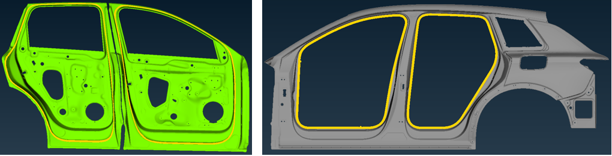
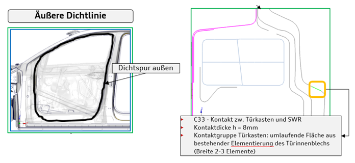
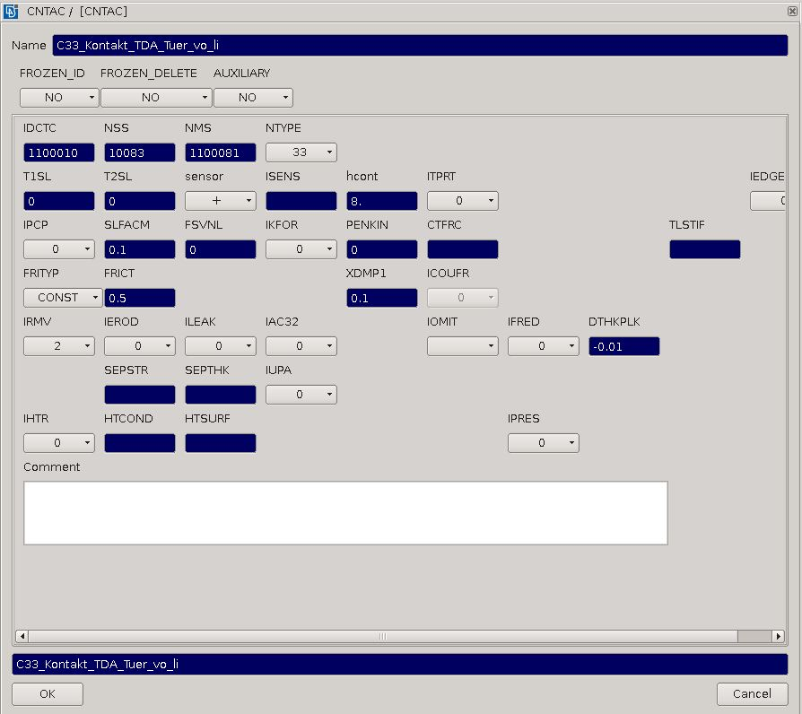
Schloss ([redacted-person] kinematisch abgebildet)
Türpackage (Lautsprechersystem, Fensterheber etc.)
Türgriff und Lagerbügel (kinematisch abgebildet)
Türscharniere (ohne RBodies mit Vorspannung)
Verbindungspunkte (Niete/Schweißpunkte etc.) werden über MPC-Links dargestellt
Die versuchsspezifischen Crashmassen und die Achslastverteilungen werden von der Fahrzeugsicherheit vorgegeben und in einer Übersichtstabelle von der Fachabteilung zur Verfügung gestellt. Die eingestellten Crashmassen und Achslastverteilungen sind bei den Statusberichten für jeden Lastfall zu dokumentieren.
[redacted-person] und die Achslastverteilung muss möglichst genau nach Vorschrift der Fahrzeugsicherheit eingestellt werden. [redacted-person] müssen genau da verschmiert werden, wo die Bauteile/Massen fehlen, so dass sich realistische Verhältnisse automatisch einstellen. [redacted-person], Trägheiten und Momenteneinleitungen sind nicht zulässig. [redacted-person] im crashrelevanten Deformationsbereich ist zu vermeiden. [redacted-person] ist zu dokumentieren.
Für die Versuchsbegleitung und die Versuchsvalidierung sind die Massen an den Versuch anzupassen. Einflüsse müssen analysiert und dokumentiert werden. Die offizielle Versuchsdefinition ist für Serienauslegung aber beizubehalten.
Sichtbarkeit
Abgreifen der lokalen Geschwindigkeiten für Validierungszwecke
[redacted-person] werden nicht mit Tieds sondern mit OTMCOs angebunden. So haben die Würfel keine aussteifende Wirkung und keine unrealistischen Effekte im Nahfeld der Messwürfel.
[redacted-person] wird in der Regel von [redacted-person] gestellt. Anpassungen im laufenden Projekt sind möglich.
Die allgemeine Standardseitencrashauswertung muss bei jeder Rechnung angezogen werden. [redacted-person] ist eine Hilfe um einen schnellen Überblick zu bekommen. [redacted-person] kann nicht jedes Detail erfassen und ersetzt deswegen eine spezifische projektbezogene Auswertung nicht.
[redacted-person] und Erklärung der Standardauswertung inkl. Skripte ist zu finden unter:
S:\EK_Aufbau\Pro_Simu\3000_Kompetenzteams\3B00_SC_DE\3BF0_Lastenheft_Modellierungsrichtlinie\Standardauswertung
bzw.
Status.E – 2018_01_31_Standardauswertung_Seitencrash_V1.5.0.zip
Zusätzlich zu den allgemeinen Qualitätschecks soll für jeden Lastfall folgendes berichtet werden:
Datenquellen mit Datum (CAD Karosserie, Tür, Interieur, Massentrimm, Crashmassen, etc.)
Bild mit Lagen der Massenverschmierung
Barrierenvariante und Trefferlage
Material-/Wandstärkenzuordnung aller karosserierelevanten Seitencrashstrukturlastpfade (Konzeptabhängig)
B-Säule (komplett)
A-Säule oben (komplett)
Dachverstärkungen (Dachrahmen vorne, mitte, hinten)
Dachsystem
Schweller
Bodenquerverstärkungen (Sitzquerträgern, etc.)
Material-/Wandstärkenzuordnung der Türen (Konzeptabhängig)
Türaufprallträger
Schachtverstärkungen
etc.
[redacted-person] vom allgemeinen Crashmodell (falls erforderlich)
[redacted-person] sind die obigen Punkte und alle Lastfallziele (vy, Strukturintegrität, Robustheit, etc.) zu berichten. In diesen Auswertungen müssen aussagekräftige Kommentare und ein Fazit dokumentiert werden. [redacted-person] müssen die Auswertungen nach Absprache mit der Fachabteilung so kurz wie möglich, aber aussagekräftig aufgearbeitet werden.
Erwartet wird eine sichere, robuste Auslegung bei minimalsten Gewicht. [redacted-person] (Strukturintegrität, Intrusionen und Eindringgeschwindigkeiten) in den Auslegungslastfällen werden von der Fahrzeugsicherheit definiert. Um den besten Kompromiss für das Fahrzeug sicher zu stellen, ist eine Vermischung der Ziele nicht zulässig.
[redacted-person] der Auslegung ist sicherzustellen und bei Meilensteine zu dokumentieren. [redacted-person] bzw. Arbeitsanweisung für Robustheitsanalysen ist bei den einzelnen Lastfällen dokumentiert.
[redacted-person] sind teilweise marktspezifisch. Um den Aufwand in der Auslegung zu reduzieren, können nach Absprache mit der Fachabteilung einige Lastfälle zusammengefasst werden.
Im Status ist das komplette Lastfallportfolie zu bewerten.
Um den besten Kompromiss (Funktion, Kosten, Gewicht) für das Fahrzeug sicher zu stellen, ist eine Zusammenfassung, oder eine Vermischung der fahrzeugspezifischen Ziele ([redacted-person], Gesetze, Strukturintegrität, Robustheit) nicht zulässig.
[redacted-person] der möglichen Lastfälle sieht man in der unteren Tabelle.
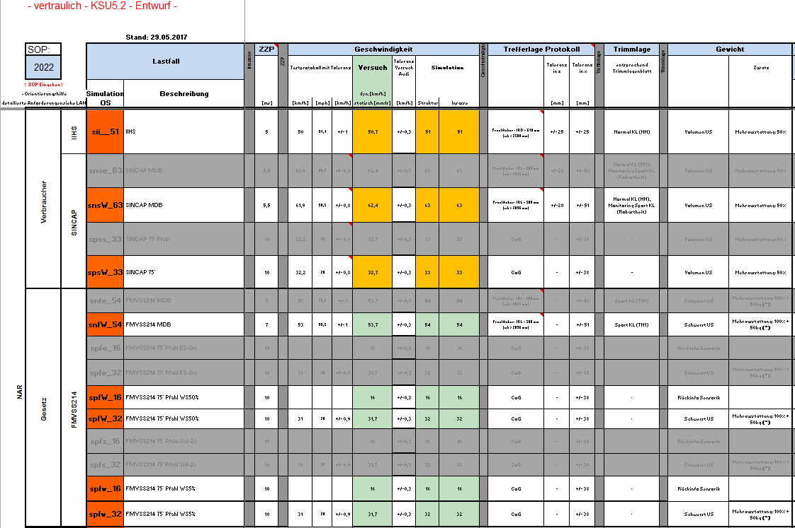
[redacted-person] im Detail, soweit als Auslegungslastfall definiert, wird in den folgenden Abschnitten beschrieben.
[%STATUS.E LOADCASE ECE-R95; 96-27-EC%]
[%STATUS.E LOADCASE RdW Strukturintegriät MDB%]
[%STATUS.E LOADCASE Australien_NCAP AE-MDB%]
[%STATUS.E LOADCASE Euro_NCAP AE-MDB%]
[%STATUS.E LOADCASE Japan_NCAP AE-MDB%]
[%STATUS.E LOADCASE China_NCAP AE-MDB%]
[%STATUS.E LOADCASE Korea_NCAP AE-MDB%]
[%STATUS.E LOADCASE US_NCAP MDB%]
[%STATUS.E LOADCASE IIHS MDB%]
[%STATUS.E LOADCASE FMVSS214 MDB%]
[%STATUS.E LOADCASE RdW Feldrelevanz (FMVSS214 MDB)%]
[%STATUS.E LOADCASE ECE-R135 Pfahl%]
[%STATUS.E LOADCASE Euro_NCAP Pfahl%]
[%STATUS.E LOADCASE Korea_NCAP Pfahl%]
[%STATUS.E LOADCASE Australien_NCAP Pfahl%]
[%STATUS.E LOADCASE Latin_NCAP Pfahl%]
[%STATUS.E LOADCASE FMVSS214 Pfahl ES2%]
[%STATUS.E LOADCASE FMVSS214 Pfahl Sid2s%]
[%STATUS.E LOADCASE US_NCAP Pfahl WS50%]
[%STATUS.E LOADCASE Pfahl 2./3.Sitzreihe%]
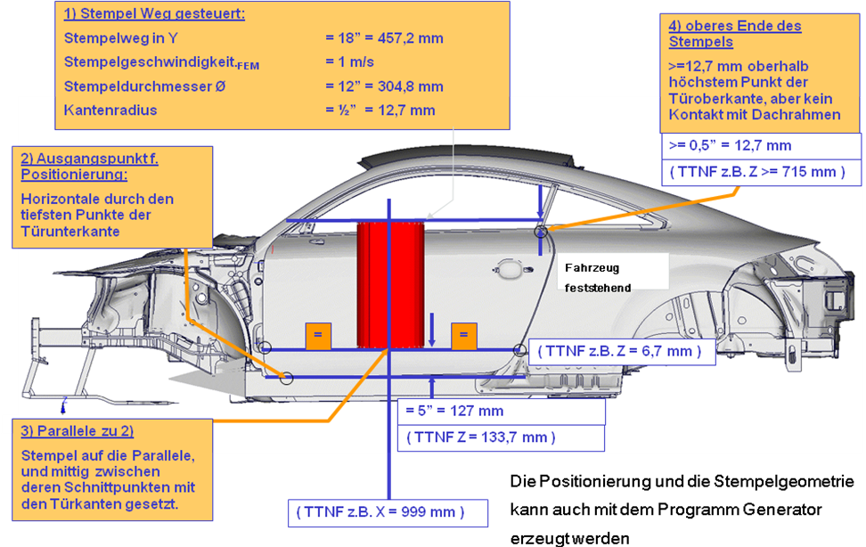
Ausgangspunkt für die Positionierung des Stempels ist eine Horizontale durch den tiefsten Punkt der Türunterkante. Zu dieser Horizontalen wird nun eine Parallele im Abstand von 5“ (127 mm) in positiver z-Richtung (Fahrzeughochachse) gelegt. [redacted-person] wird nun mit seiner Unterkante mittig zwischen den beiden Schnittpunkten dieser Parallele mit der vorderen und hinteren Türkante positioniert. [redacted-person] des Stempels muss mindestens 0,5“ (12,7 mm) den höchsten Punkt der Türoberkante überragen, jedoch darf der Stempel den Dachrahmen nicht berühren.Anforderung: Türeindrückung
Barriere: Tuereindrueck_Stempel
Fahrzeug: RdW und NAR Konfiguration (SOL-Rohr)
Barrierenmitte: siehe obige Detailbeschreibung
Barrierenhöhe: siehe obige Detailbeschreibung
Geschwindigkeit: 1m/s
Trefferlagentoleranz: -
Rechenzeit [ms] TIME 400.1
Dehnratenabhängigkeit STRAINRATE YES + RateScale setzen z.[redacted-person] in Simulation 1m/s vs. Versuch 0,005m/s --> Ratescale 0.005
Outputintervall THP [ms] 0.1
Outputintervall DSY [ms] 5
Pamcrash SP (single precision) ist, wenn gleiche Ergebnisse wie DP
(double precision) vorzuziehen.
Besonderheiten in der Modellerstellung
…
[redacted-person] ist mit den [redacted-co] Fachabteilungen abzustimmen.
Prinzipiell werden folgende Themen beleuchtet:
Belastungen in der Rohkarosserie
[redacted-person] Scharniere und Schlosshaken
[redacted-person]
Belastung der Türen
[redacted-person] (TAT)
Anbindung TAT an Türrohbau
[redacted-person] (kleine/große Bassbox) etc.
[redacted-person]
…
Belastung von HV-Komponenten und Steuergeräten falls im beaufschlagten Bereich
[%STATUS.E LOADCASE FMVSS214 Türeindrückung%]
[%STATUS.E LOADCASE RdW Türeindrückung%]
[%STATUS.E LOADCASE IS[redacted]%]
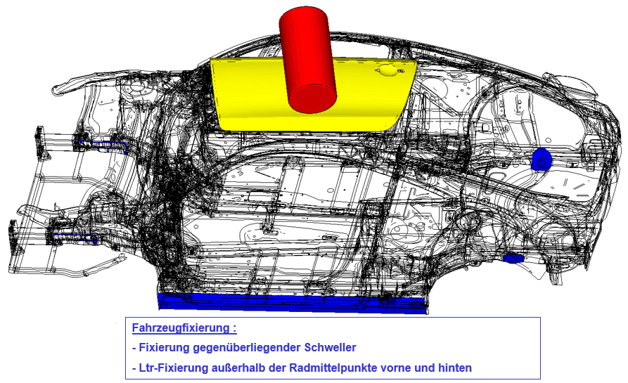
[redacted-person] wird über einen RBODY, dessen COG in allen 6 DOF gesperrt ist, realisiert. Der RBODY beinhaltet die [redacted-person] stempelseitig sowie die Fahrwerksanbindepunkte vorn und hinten stempelgegenseitig.
Die standardisierte Auswertung erfolgt analog Abschnitt 3.4.3.
Hier werden die Hintergründe der Auswertung nochmals kurz erklärt, um sie auch manuell durchführen zu können.
[redacted-person] der Auswertung ist die Aufzeichnung der Stempelkraft bzw. des Eindrückwiderstandes in einem Kraft (kN) – Weg (mm)-Diagramm (Beispiel siehe unten).
Bei der Auswertung der Kraft-Weg-Kurve sind drei Bereiche hervorzuheben, bei deren Auswertung folgende Zielwerte zu berücksichtigen sind:
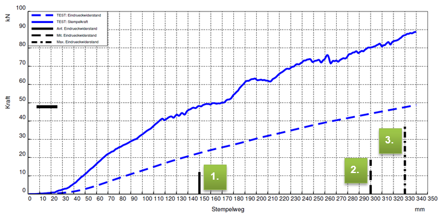
[redacted-person] von 0 mm – 152 mm
Die durchschnittliche Kraft ergibt sich durch die Integration der Kraftkurve (Eindrückwiderstandskurve) über den Weg und muss durch 152mm geteilt werden.
$$\overline{F} = \frac{\int_{0}^{152}{f(s)ds}}{f(s = 152)}$$
[redacted-person] von 0 mm – 305 mm
Die durchschnittliche Kraft ergibt sich durch die Integration der Kraftkurve (Eindrückwiderstandskurve) über den Weg und muss durch 305mm geteilt werden
$$\overline{F} = \frac{\int_{0}^{305}{f(s)ds}}{f(s = 305)}$$
[redacted-person] muss bis max. 450 mm erreicht werden (Versuchsstopp nach 305 mm wenn max. Kraft früher erreicht wird)
Für das maximal zu erreichende Kraftniveau gelten marktspezifische Zielwerte. Diese sind im Einzelnen mit der Fahrzeugsicherheit abzustimmen.
[redacted-person] zum Erreichen dieser marktspezifischen Zielwerte erfolgt ohne verbauten Sitz. Sollten dabei die Zielwerte der Türeindrückung mit Sitz nicht erreicht werden, ist eine gesonderte Berechnung mit eingebautem Sitz durchzuführen.
Werden auch mit Sitz die Zielwerte nicht erreicht, sind geeignete Maßnahmen zu entwickeln.
In diesem Abschnitt soll auf den Entwicklungsprozess des Türaufprallträgers (TAT) kurz eingegangen werden. Grundsätzlich werden die seitencrashspezifischen Anforderungen an den TAT im [redacted-person] Seitencrash (Beispiel: AU370 --> LAH 8V0 880) beschrieben.
Das zur Entwicklung eines TATs erforderliche Versuchsprogramm umfasst im Wesentlichen 2 unterschiedliche Versuche, erstens die Türeindrückung als Bestandteil der FMVSS214 und zweitens die Einzelteilbiegeversuche.
Bei der Türeindrückung müssen länderspezifische Grenzwerte für den anfänglichen, mittleren und Spitzeneindrückwiederstand erreicht werden. Dabei darf es nicht zum Bruch oder Abreißen des Bauteils kommen.
Die Einzelteilbiegeversuche (3-Punkt-Biegeversuche) werden beim Lieferanten / Entwickler durchgeführt. Im Rahmen der Vorauslegung wird - abgeleitet von der FMVSS214 - die Kraft-Wegkurve für den TAT von [redacted-co] als Grenzkurve vorgegeben. Die folgenden Bilder zeigen den prinzipiellen Aufbau des 3-Punkt-Biegeversuches sowie beispielhaft die Kraft-Wegkurve für den TAT. [redacted-person]-Wegkurve ist projektabhängig und kann sich im Projektfortschritt ändern.
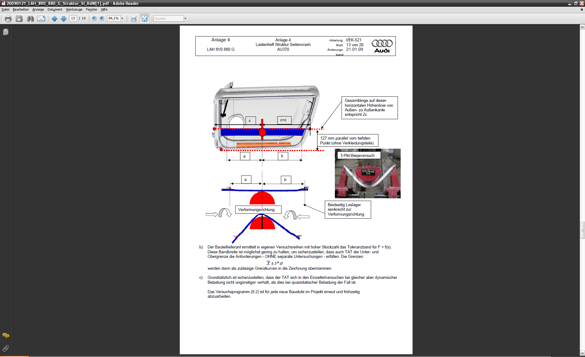
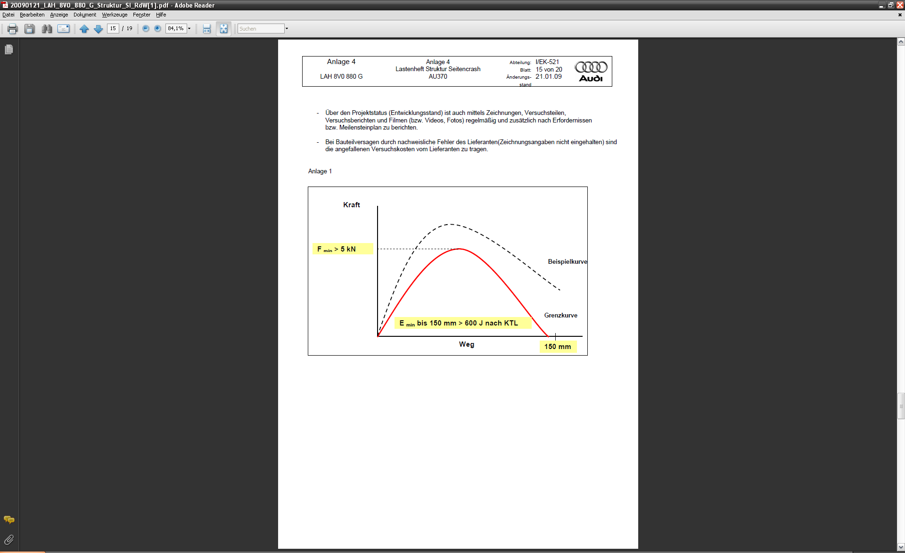
Wichtig für die Einzelteilbiegeversuche ist:
Es darf nicht zum Bruch oder Abreißen des Bauteils kommen
[redacted-person] ist das Verhalten bei Karosserie- und Gesamtfahrzeugversuchen
[redacted-person] ermittelt in eigenen Versuchsreihen mit hoher Stückzahl das Toleranzband für F = f(s).
[redacted-person] ist möglichst gering zu halten, um sicherzustellen, dass auch TAT der Unter- und Obergrenze die Anforderungen - OHNE separate Untersuchungen – erfüllen
Grundsätzlich ist sicherzustellen, dass der TAT sich in den Einzelteilversuchen bei gleicher aber dynamischer Belastung nicht ungünstiger verhält, als dies bei quasistatischer Belastung der Fall ist
[redacted-person] ist für jede neue Baustufe im Projekt erneut und frühzeitig abzuarbeiten
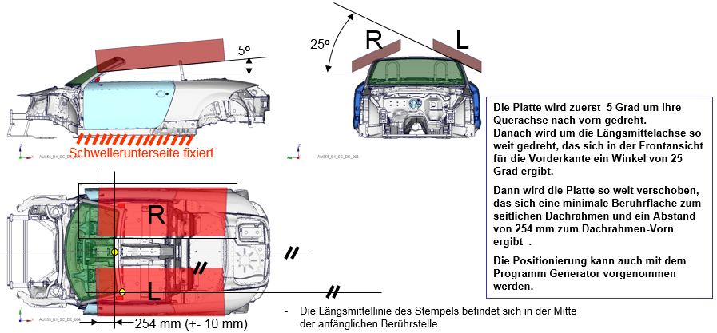
Fahrzeug: Zielvorgabe marktspezifisch nach [redacted-person]
Dummies: Vorgabe seitens [redacted-person] zur [redacted-person]
Barrierenmitte: Positionierung siehe Detailbeschreibung
Geschwindigkeit: 1m/s
Trefferlagentoleranz: --
Rechenzeit [ms] TIME 200.1 für IIHS und RdW
für FMVSS216a projektspezifisch
1. Seite bis Zielkraftniveau, 2. Seite 200ms
Dehnratenabhängigkeit STRAINRATE YES + RateScale setzen z.[redacted-person] in Simulation 1m/s vs. Versuch 0,005m/s --> Ratescale 0.005
Outputintervall THP [ms] 0.1
Outputintervall DSY [ms] 5
Pamcrash SP (single precision)
Besonderheiten in der Modellerstellung
Reibfaktor zwischen Stempel und Fahrzeug auf 0.2 gesetzt
[redacted-person] ist mit den [redacted-co] Fachabteilungen abzustimmen.
Prinzipiell werden folgende Themen beleuchtet:
Belastungen in der Rohkarosserie
Knicken der Säule B
Belastungen in der Säule A oben/ Dachrahmen / Dachspriegel -> Intrusion in Fahrgastzelle
[redacted-person]-C
Belastung der Türen
[redacted-person] (PSD/PAD+ etc.)
Belastung von HV-Komponenten und Steuergeräten falls im beaufschlagten Bereich.
[%STATUS.E LOADCASE RdW Dacheindrückung%]
[%STATUS.E LOADCASE IIHS Dacheindrückung%]
[%STATUS.E LOADCASE FMVSS216a Dacheindrückung%]
[%STATUS.E LOADCASE Dachfalltest%]
Abkürzungen die verwendet werden:
GE = [redacted-person]
SDL = Systementwickler ROPS/ÜRSS
ROPS = [redacted-person] System
ÜRSS = Überrollschutzsystem
[redacted-person] sind auszulegen:
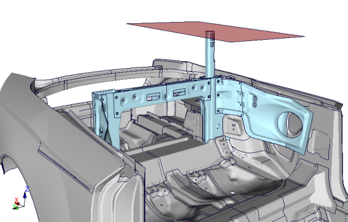
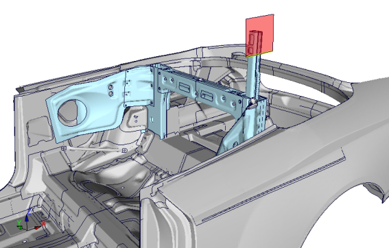
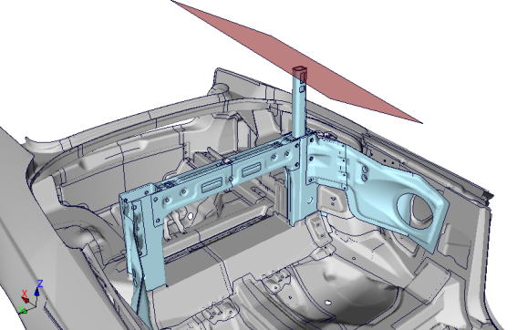
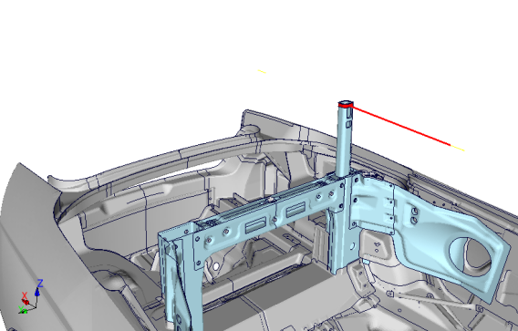
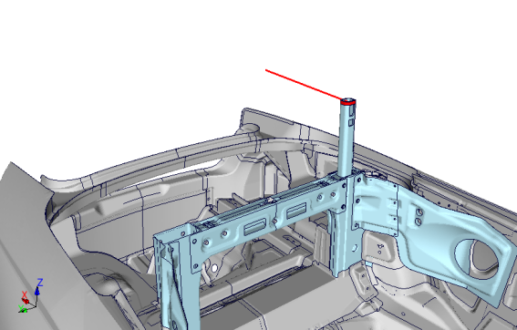
Entwicklungsseite ist die linke Fahrzeugseite. Von oben nach vorne betrachtet.
Die FEM Modell sind auf dieser Seite zu positionieren und zu übergeben!
[redacted-person] ob auf der linken oder rechten Fahrzeugseite simuliert wird ist von den Verhältnissen abhängig. Es wird immer der „worst case“ untersucht. Im Zweifelsfall werden beide Seiten bewertet.
Ist der Überrollschutz als Lieferumfang ausgeführt, so ist ein reduziertes Simulationsmodell abzuleiten in dem die Umgebung des Überrollschutzes ausreichend dargestellt ist. In diesem Modellstand sind sowohl Toleranzlagen des ROPS-Modul zum Rohbau als auch das Verschraubungskonzept detailiert darzustellen. [redacted-person] des reduzierten Modells ist vor der Weitergabe an den Lieferanten mit der [redacted-co] Fachabteilung abzusprechen.
Rechenzeit [ms] TIME 200.1
Dehnratenabhängigkeit STRAINRATE NO
Outputintervall THP [ms] 0.1
Outputintervall DSY [ms] 10
Pamcrash SP (single precision)
Besonderheiten in der Modellerstellung
ROPS / ÜRSS Nummerierungsvorschrift
(nicht spezifiziert in der [redacted-person])
Property IDs [redacted]
Knoten/Element IDs, etc. [redacted]
[redacted-person] für das Berechnungsmodell gilt für + - X, +Z
Die einzuleitende Kraft steigt über eine Zeitspanne von 7s (100ms) an, bis zu einem fahrzeugspezifischen Wert von FLastenheft.
Danach wird die Kraft über einen Zeitraum von (75ms) konstant gehalten.
[redacted-person] darf auch innenhalb dieser Zeitspanne die Zielkriterien (F, Sx, Sz, …) nicht verletzten.
Danach wird NUR IN DER SIMULATION die Kraft nochmals um 3kN innerhalb (25ms) angehoben, um die Systemrobustheit/Schwachstellen durch die Simulation zu bewerten.
([redacted-person] sind mit [redacted-person] abzustimmen (LAH [redacted-person])).
Verschraubungskonzept des ÜRSS in der Karosserie:
[redacted-person] Empfehlung:
4 x M10 10.9 Durchgangsschrauben mit 55Nm Anzugsmoment.
[redacted-person] sind in Verantwortung vom SDL und an
„a/b“ und mit [redacted-co]/GE an „c“ (siehe Entwicklungsschema unter 3.4.9.8) frei zu prüfen und zu belegen.
[redacted-person] der Auslegungsverantwortung und zu betrachtende Modellumfänge
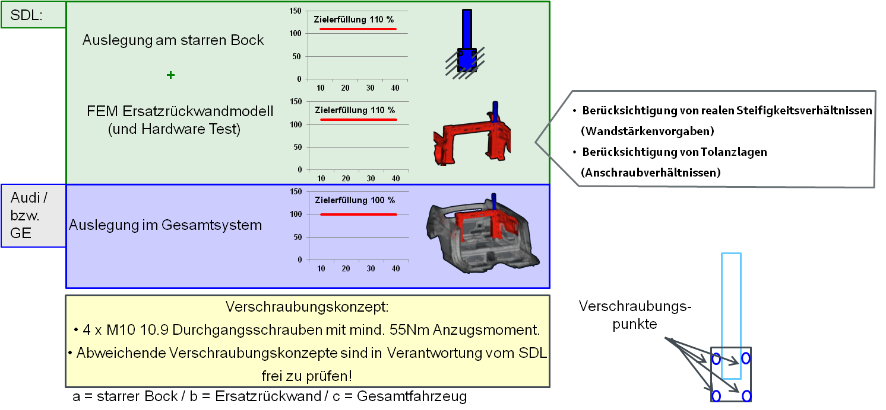
(Entwicklungsschema AU495)
[redacted-person] im Ersatzrückwandmodell sind in enger Abstimmung mit der [redacted-co] Fachabteilung zu klären. Im starren Bock und Ersatzrückwandmodell ist für eine robuste Systemauslegung eine Zielerfüllung von 110% gemäß Fahrzeugsicherheitsanforderungen zu erfüllen.
Auszuwerten sind die Zielgrößen, die dem entspr. Lastenheft der Fahrzeugsicherheit und diesem zu entnehmen sind. [redacted-person] sind im Gesamtmodell sicher zu erfüllen.
[redacted-person] beziehen sich auf (gilt für alle Lastfälle unter 7.2.3):
Kraft/Weg/Zeit/[redacted-person]
Schraubenbelastung/Verbindungsbelastung (Nachweis über Robustheit und
Systemfunktionsfähigkeit sind in der Komponente, in der Ersatzrückwand und im
Karosseriegesamtmodell zu belegen)
[redacted-person],
kritische Bereiche,
Sensitivität der Lastfälle auf Versagen an den kritischen Stellen prüfen und aufzeigen
[redacted-person] der Hardwareversuche sind aussagefähige Vergleiche durchzuführen und zu dokumentieren.
Ein ständiger Abgleich der Simulationen in den reduzierten Modellen und im Gesamtmodell ist sicherzustellen.
Komponenten- und Gesamtfahrzeugsimulationen sind nach Bedarf zur Versuchsbegleitung durchzuführen.
Erfolgt je nach Bedarf in enger Absprache mit der [redacted-co]-Fachabteilung.
Bezüglich der Auslegungsziele gelten die entsprechenden Lastenheftvorgaben der Fahrzeugsicherheit, wobei zusätzlich folgende Maximallastniveaus im starren Bock über den gesamten Verformungsbereich nicht zu überschreiten sind:
FMVSS216: Fmax=1,3*(2,5*mleer*g)
Z-Druck: Fmax=1,8*(2,2*mleer*g)
Y-Druck: Fmax=1,8*(1,15*mleer*g)
[redacted-person] der Fahrzeuge muss robust, das heißt unempfindlich gegenüber Schwankungen und Änderungen von verschiedenen Randbedingungen, wie z.B.: Toleranzen (insb. Dummyposition), Massen, Geschwindigkeit und verschiedenen Ausstattungsvarianten (z.B.: Normaldach, Schiebedach und Open-Sky etc.), ausgelegt werden.
[redacted-person] sind zu berücksichtigen:
[redacted-person] sollen immer sicher (+10% im starren Bock) über den modellspezifischen, im Lastenheft der Fahrzeugsicherheit definierten Grenzlinien liegen.
[redacted-person] der erforderlichen Widerstandskraft darf kein Bauteil des Fahrzeuges (Verkleidungen, Dachhaltegriffe etc.) den Dummykopf berühren (FMVSS216nprm). Dabei sind die Toleranzen bei der Positionierung des Dummykopfes zu berücksichtigen.
Bei tragenden Strukturteilen darf während des Versuchs kein Bruch auftreten.
[redacted-person] hin kantige Strukturdeformationen sind zu unterbinden.